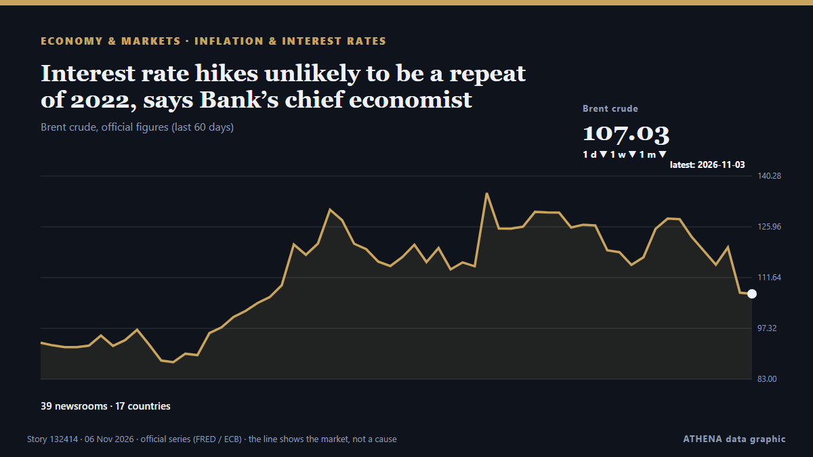

Инфляция и ставки
СпонсорПри поддержке  Cybernetics and Artificial Intelligence Lab Welcome to the Cybernetics and Artificial Intelligence Laboratory, established at the Department of Business Administration of the National and Kapodistrian University of Athens. The lab is headed by Professor Dimitrios Thomakos. The lab aims to do research that can be published in top venues. Our research uses tools and methods of Artificial Intelligence, and lies in the following areas: - Forecasting - Decision making - Cyber security - Finance We are always looking forward to collaborating with exceptional students!
Cybernetics and Artificial Intelligence Lab Welcome to the Cybernetics and Artificial Intelligence Laboratory, established at the Department of Business Administration of the National and Kapodistrian University of Athens. The lab is headed by Professor Dimitrios Thomakos. The lab aims to do research that can be published in top venues. Our research uses tools and methods of Artificial Intelligence, and lies in the following areas: - Forecasting - Decision making - Cyber security - Finance We are always looking forward to collaborating with exceptional students!
| 25 окт. | 0 |
|---|---|
| 26 окт. | 0 |
| 27 окт. | 0 |
| 28 окт. | 0 |
| 29 окт. | 0 |
| 30 окт. | 0 |
| 31 окт. | 0 |
| 1 нояб. | 1 |
| 2 нояб. | 2 |
| 3 нояб. | 5 |
| 4 нояб. | 3 |
| 5 нояб. | 2 |
| 6 нояб. | 0 |
| 7 нояб. | 0 |
Заголовки приводятся на английском языке, как они были опубликованы.

Interest rate hikes unlikely to be a repeat of 2022, says Bank’s chief economist
Intermodal marketing companies and railroads are using ongoing bid negotiations to raise rates in annual agreements for 2027. из The Journal of Commerce (JOC)
City searching for signals as Bank of England set to hike interest rates
City traders are searching for any signs the Bank of England could move faster in hiking interest rates in the coming months with policymakers widely expected to tighten monetary policy on Thursday . из City A.M.
Eurozone inflation rises to 4% in October
Consumer prices accelerate at fastest pace in three years. из Financial Times - Global economy
October 2026 inflation rises to 5.5%, indicating a third consecutive increase
Ghana’s year-on-year inflation rate has increased to 5.5% in October 2026, from 5.2% in September, marking the third consecutive monthly rise since July. из MyJoyOnline
Soaring petrol prices amid Middle East conflict drive highest Philippine inflation in years
The Philippine's latest inflation number is the highest since February 2023. из CNA (Channel NewsAsia)
ECB’s Nagel signals December rate hike as inflation risks mount
On Tuesday, the President of the Bundesbank and Governing Council member of the European Central Bank (ECB), Joachim Nagel, said that an ECB rate increase in December “is very likely to be necessary.” из FXStreet
Markets brace for aggressive Sweden rate hikes as Riksbank plays catch-up
The financial markets are banking on the Riksbank raising Sweden's key interest rate at least four times – possibly even five – within the space of a single year. из The Local Sweden
Transamerica Institute’s CEO warns of a retirement ‘perfect storm’ as even affluent Americans fall short of the $2.6 million goal
Uncertainty about the future of Social Security, persistent inflation, competing financial priorities, and the threat of job disruptions are all making it harder for Americans to save for retirement. из Fortune